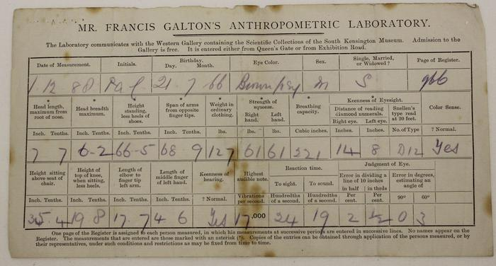
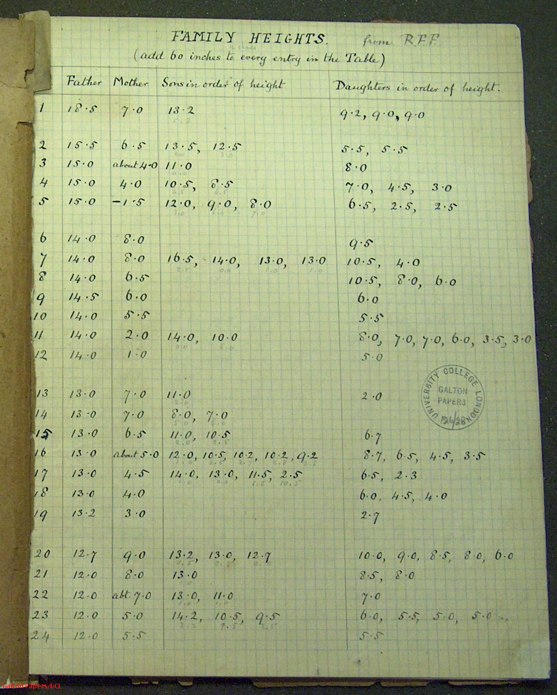
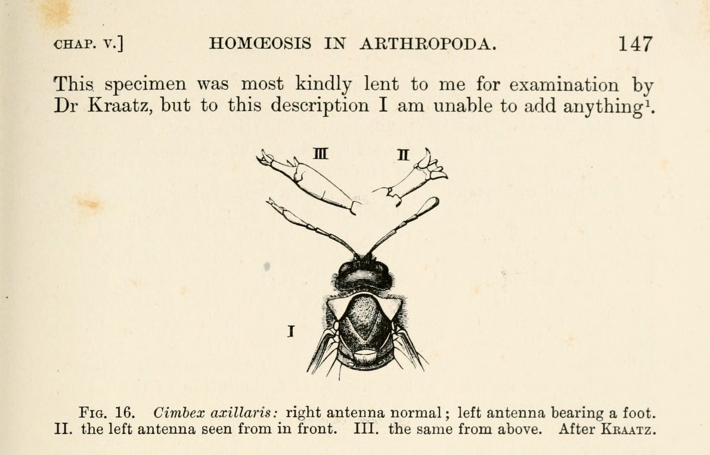

Era 0, Part I: Heredity observed from variation
Quantitative foundations: biometry and statistical genetics, 1830s–1918
Before heredity was explained with molecular data, scientists analyzed it through phenotypes. Breeders and naturalists watched variation across generations both in ordinary inheritance and through forced cross-breeding.167 The visible patterns they observed and the records they kept of those traits led to some of the earliest foundations of computational biology. These foundations allowed scientists to begin to hypothesize about the hidden structures driving those traits and statistics gave scientists a way to turn observations that had long been anecdotal into hand-calculated quantities.6717
Once scientists could quantify resemblance, they could analyze populations numerically. Population traits could be treated as distributions with means, variances, correlations, and more. Because this was a new way of evaluating biology, the datasets, descriptive language, and research community had to be developed from the ground up but they did not have to start from scratch. Many scientific and analytical practices were already established such as the rigorous logging of observations, newly developed statistical measurement techniques, information sharing through journals, and using assistants to increase manual calculation throughput.1112 As the research progressed, this new way of collecting evidence made its way into paper records and printed exchanges but, due to the field still being fragmented, some findings could remain obscure for decades. Despite these limitations, this new approach to analyzing biology started to show it was capable of underpinning new theories. For example, in 1918, Ronald Fisher used a computational foundation to show that continuous biometric traits could arise from discrete Mendelian factors.17
Image 1. Mendel's surviving notes on flower-color experiments, written on the same sheet as editing marks for a sermon.28
Inheritance without a mechanism
By the mid-nineteenth century, natural history still depended largely on collecting, classifying, and comparing observations. Darwin's On the Origin of Species (1859) proposed natural selection but it left one key assumption exposed. Selection could only accumulate change if some variations survived across generations and Darwin did not yet know what carried them. He later tried to answer this question with pangenesis, a mechanism in which tiny "gemmules" from across the body contributed to reproduction, though he privately called the theory "abominably wildly, horridly speculative."1 Despite this, Darwin and others knew an answer was needed, because without a mechanism of transmission, selection rested on an unexplained assumption.1 But Darwin's need for persistent heredity ran into a common view at the time called "blending inheritance," in which offspring seemed to inherit an average of their parents' traits. Many scientists found the idea intuitive because offspring often did have traits that looked like a blend of their parents. The trouble with this theory came when analyzing it across many generations. If a tall parent and a short parent produced intermediate children, and that blending continued each generation, variation should wash out toward an average. The differences that breeders and naturalists kept seeing should have faded away, and selection would lose the persistent variation it needed to work on.23
Francis Galton approached that persistence as something that could be measured. Rather than looking for the physical carrier of heredity, he focused on understanding how strongly traits in families and more distant relatives resembled one another.8 Gregor Mendel had already published evidence in 1866 that inheritance could behave as discrete factors rather than blended resemblance, but that evidence did not reshape the field until its rediscovery around 1900.56 Since Mendelian inheritance proposed factors that could hold their identity across generations, disappear from view, and return in countable ratios, once the field discovered it, it quickly gained popularity.5615 After this, Walter Sutton and Theodor Boveri's work in cytology connected Mendelian segregation to chromosome behavior in the early 1900s, and Thomas Hunt Morgan's fly work made sex-linked inheritance traceable in 1910.2
Despite these advances, scientists were still unsure what the mechanism of inheritance was. Mendelian factors gave scientists rules for predicting inheritance, and chromosome-focused cytological work suggested where the factors of the mechanism might sit, but the factors themselves were still known only through their effects. Wilhelm Johannsen's pure-line beans made that gap sharper. He could select visible differences within a uniform line, but the descendants did not keep shifting, which showed that the measured trait and the inherited type were not the same thing. In 1909, he named that split "genotype" and "phenotype."225 Even with this knowledge the researchers still could not isolate and experiment directly on the inheritance factor. They still did not know how to connect a visible trait to a particular hereditary factor, for instance, how a seed shape followed from a particular factor. Statistics had made visible resemblance quantifiable, and cytology gave the factors a possible cellular location, but the factor itself remained an open, contested question.215
What made quantification possible
Making progress on understanding inheritance without knowing the mechanism was only possible because of advances in statistics. Scientists in physics and astronomy had seen that repeated measurements scattered around a true value and created a bell-shaped "law of error" leading to the normal distribution theory.3 In 1835, Belgian astronomer-statistician Adolphe Quetelet applied the same logic to human traits. Human measurements varied from person to person, but Quetelet argued that they still formed regular population patterns around average values, represented by the "average man," or l'homme moyen.3 While Quetelet focused on the population mean, Galton used that mean as a baseline for inheritance. He wanted to understand how much of a parent's departure from the mean appeared again in the child versus how much fell back toward the population mean.78
Scientists found that applying statistics to inheritance required data to be collected in the right structure. Through the nineteenth century, data collection had come from census-like social statistics, anthropometric surveys, and breeding records.3429 Those records were useful, but they were not built around family comparison, so Galton began looking to collect measurements that connected relatives across generations that could be statistically analyzed. At the 1884 International Health Exhibition in London, he set up an Anthropometric Laboratory and measured 9,337 visitors, recording height, weight, grip strength, hearing, vision, and other personal data while actually charging each person.4 Those rows of comparable measurements let Galton ask whether relatives departed from the population mean together, and whether one trait tended to correlate with another. In that tabular form, human variation could be compared in the way Galton needed so that he could begin to develop modern statistical regression and correlation.789


Image 2. Left: a measurement card from Galton's Anthropometric Laboratory, dated December 1, 1888. Right: a page from Galton's family-heights notebook, where parent and child heights were recorded in tabular form. Together they show the paper form of the data Galton wanted statistics to explain.27
By the end of the nineteenth century there were new methods for measuring heredity but there was still no consensus on what the results meant for inheritance. Around 1900, this question led to a sharp divide when three botanists, Hugo de Vries, Carl Correns, and Erich von Tschermak, rediscovered what would become a pivotal paper. That paper was Mendel's. Historians still debate the independence and priority of that rediscovery,5 but the paper's return turned heredity into a fight between two groups known as the biometricians and Mendelians.15
The fight over heredity
After Mendel's work was rediscovered around 1900, biologists split into two camps that argued bitterly over what inheritance was and how it worked.15 Biometricians treated heredity as a statistical pattern of resemblance across families and populations, built from many ancestral contributions while Mendelians treated heredity as the transmission of discrete factors revealed by controlled crosses.15
The biometricians, led by Karl Pearson and W. F. R. Weldon, measured continuous variation in wild populations and described it with correlations and distributions. From their side, Mendelian ratios could look too clean, experimental, and detached from the smooth variation visible in real populations. To build out evidence for the biometricians' position, in 1893 Weldon measured different body dimensions of adult female shore crabs from Naples and Plymouth. He found that crab anatomy varied continuously but not randomly, with body dimensions covarying within each measured population rather than varying independently. His later work even suggested that broader-fronted crabs were selectively eliminated in silty water, providing a quantification of natural selection.14 Instead of relying on population measurements, the Mendelians, led by William Bateson, collected evidence from controlled multi-generational crosses. Bateson spent years collecting cases where variation appeared in discontinuous forms, including organisms with extra or missing parts. His 1894 Materials for the Study of Variation treated discontinuity as a biological clue rather than statistical noise.15 From their perspective the biometric averages looked too smooth. A curve could describe a population with high accuracy but it would miss that a trait could reappear unchanged in a cross after a generation. The reappearance of Mendel's paper in 1900 gave Bateson the mechanism he had been looking for. Mendel's work showed that traits could segregate, disappear from view, and return in predictable ratios. Bateson turned this interpretation into the basis of his work and, in 1905, gave the new study of heredity its name, "genetics."15

Image 3. Bateson's Fig. 16 shows a sawfly with one normal antenna and one antenna bearing a foot-like structure. Cases like this made discontinuity look like evidence rather than stray measurement error.30
By 1906, the Weldon-Bateson dispute had become both technical and openly hostile. The technical question was whether Mendel's pea crosses could support the broad claims Bateson made for them. Weldon argued that other crosses showed variable dominance and that the ancestry of the lines still mattered. To him that made Mendel's results look too narrow to serve as a general theory of inheritance. Bateson's 1902 reply called Weldon's criticism "baseless and for the most part irrelevant." For Bateson, the crucial point was that a trait could disappear from view in one generation and return in predictable proportions later. Weldon's death in 1906 left Pearson as the main defender of the biometric position.15 By this point, each side had found a real issue in the other. Bateson saw that the older ancestral-contribution picture could not explain everything heredity did. If inheritance was only graded resemblance from ancestors, it struggled to explain traits that skipped generations and returned intact in predictable ratios. Pearson and Weldon saw that clean Mendelian crosses made heredity look simpler than it was in wild populations, where variation was usually continuous and selection worked through small measured differences.1415
A bridge between the two groups came in two parts. First, in 1908, Godfrey Hardy and Wilhelm Weinberg each independently showed mathematically that Mendelian inheritance could be calculated in a population, not only in a controlled cross. In their proposal they showed that if mating was random and no outside force changed the frequency of a hereditary factor, the different forms of that factor would appear in predictable genotype proportions in the next generation. Since the factors themselves were still unseen, observable trait counts were the evidence biologists could use as the calculation's foundation and a population could remain stable without blending inheritance. Hardy and Weinberg's proposals gave biologists an idealized baseline for what Mendelian heredity did by itself.16 While their proposal explained some of the gap, the harder case was continuous traits, the kind the biometricians had been focused on. Plant breeders unknowingly had the solution since they had shown that in wheat, maize, and tobacco, measured traits could grade smoothly when several Mendelian factors contributed to the same character.26 A solution to the second part of the bridge came formally in 1918 when Fisher presented a mathematical answer showing how discrete inheritance could still generate continuous variation.17 He showed that a trait could be shaped by many Mendelian factors, each with a small effect. When added together and blurred by the environment and error, those factors could produce the smooth distributions and family correlations that Pearson and Weldon had measured. Fisher focused on showing how much of the observed variation could be traced to inheritance. He partitioned the measured trait variation into hereditary and environmental components, then related it back to Mendelian factors acting together, changing how biometric data could be interpreted. This change meant that parent-child resemblance, correlations, and distributions were foundational to estimating how hidden hereditary factors contributed to visible variation. This reframing bridged the remaining disagreement between biometricians and Mendelians and was the first step into what would become quantitative genetics.17
Eugenics and the biometric program
While the fight over Mendelism was unfolding, Galton and Pearson were also tying biometry to eugenics. Galton coined the word in 1883, then defined it in 1904 as the study of influences that improve "inborn qualities."18 Galton saw biometric evidence not only as a way to understand heredity, but as a possible tool for guiding marriage, reproduction, and social policy though he did caution that more work was needed and that findings should be used only "so far as they are surely known."18 This caution was echoed by several scientists questioning how far the evidence could go. Weldon defended Galton's statistical methods but warned that limited breeding experiments could not be turned directly into eugenic rules, H. G. Wells worried that family status could be mistaken for inherited ability, and Robert Hutchison argued that food and childhood environment could shape physical and mental development enough to be mistaken for inherited weakness.18 Even with those reservations and disagreements on what the biometric measurements could prove, eugenics gave biometric heredity a public purpose, funding, and institutional force.1819
Galton then worked to build an institutional home for eugenics. He began the Eugenics Record Office in 1904 and, in 1907, Pearson took over the work. After Galton died in 1911, his estate endowed the Francis Galton Professorship of Eugenics, with Pearson as the first holder.19 For Galton and Pearson, eugenics was the practical promise of biometry. If heredity appeared in family resemblance, then enough family records could show which traits, diseases, abilities, and social outcomes ran through a lineage. To support this research, the laboratory collected and standardized family data on the belief that heredity could be turned into tables, analyzed statistically, and then applied to eugenic policy. While Fisher's 1918 proposal resolved the division between Mendelians and biometricians, it also strengthened the statistical heredity that eugenic arguments depended on. The lab continued this research and Fisher would later hold the Galton Professorship from 1933 to 1943.20 It would take much of the next century to separate heritability from the claim that a trait was fixed in any one person.22
Key quantitative ideas
Gregor Mendel, an Augustinian friar in Brünn, began with a hybridization problem. He wrote that artificial fertilizations in ornamental plants had revealed a "striking regularity" in the return of hybrid forms.6 The missing step, as he saw it, was to follow those forms through later generations and establish their numerical ratios. Mendel's insight arose from the agricultural world around Brünn, where sheep breeders, plant hybridizers, and his own abbot had treated inheritance as something that could be tested rather than only described.29 He found that peas fit his goal because they offered constant, sharply distinguishable traits, controllable pollination, and fertile hybrid offspring. From 1856 to 1863, he turned the monastery garden into a counting experiment.6 The work spanned many seasons and required counting traits by hand. In one second-generation cross for seed shape, he counted 5,474 round seeds against 1,850 wrinkled, a ratio of 2.96 to 1.6 From that count he inferred a hidden hereditary element behind the visible trait. Mendel used several terms for the visible traits and the inherited factors that produced them, including Merkmale (or characters), Anlage, and Factoren. In his publication he represented the factors with letters such as \(A\) and \(a\).6 He argued that, in a hybrid, egg and pollen cells carried those factors "on average in equal numbers," and combined by chance at fertilization.6 A character, or physical trait, could vanish from appearance without the factor being diluted away. Despite not knowing about genes, the Mendel could see from the factor counts that there had to be a hidden hereditary unit. The paper landed in a local natural-history society journal and was written in the language of plant hybridization. Since it appeared before cytology and chromosomes had become central to heredity, and it was printed in a local publication, the work did not become part of mainstream heredity theory for three decades.5615
Francis Galton focused on the problem of understanding family resemblance. He postulated that if heredity showed up as resemblance among relatives, then resemblance had to be measured across families, rather than argued from individual examples. He first saw the pattern in sweet peas. Galton had friends grow packets of carefully weighed seeds and found that the offspring seeds tended back toward an ordinary size.8 For humans, he saw the same evidence in stature. In his 1886 paper, he described the object of the work as the "degrees of family likeness in different degrees of kinship." Studying 930 adult children from 205 families, he found that the children of tall parents were usually tall, though less extreme than their parents. Their heights retained about two-thirds of the mid-parent deviation from the population mean.7 Galton then generalized the problem, writing that "the large do not always beget the large," yet population proportions stayed surprisingly regular across generations.8 From statistics, correlation gave him a way to measure that regularity between traits and relatives while the mechanism of inheritance remained unknown. Through his work of applying statistics to the observed traits, Galton made a hereditary relationship measurable as a single number.
Karl Pearson took Galton's family-resemblance problem and pushed it toward larger samples and stricter formulas. He called this "inheritance in the mass."9 A single family could mislead, but a population of measured parents and children could show how strongly traits moved together. In 1896, building on Galton's correlation idea and Francis Edgeworth's mathematical groundwork, Pearson developed the product-moment coefficient, which gives correlation the \(r\) we still use today.9 In this paper Pearson argued that heredity and regression had been discussed too loosely, with speculation about causes, and needed precise definitions, measurements, formulas, and probability-based analysis before anyone could claim to explain heredity.9 In 1900, Pearson developed the chi-square \(\chi^2\) test, which he described as a way to judge whether observed deviations could reasonably have arisen from random sampling.10 Pearson also founded the journal Biometrika in 1901 with Galton and Weldon, giving the new quantitative biology a home of its own.11 Its first issue said the journal would collect biological data and spread the statistical theory needed for their "scientific treatment."11 In 1902, Weldon applied Pearson's method to Mendel's pea counts and found that one set of results fit Mendel's hypothesis with exceptional closeness.10 For the 639 plants in Mendel's three-character cross, Weldon calculated that a repeated experiment would give a worse fit about 95 times in 100 (\(P \approx 0.95\)), making the original counts look almost too close to the predicted ratios.10 In 1903, at UCL, Pearson's biometric work was formalized as the Drapers' Biometric Laboratory, where assistants helped turn measurements into usable tables.12 In this lab, labor was the computation scaler, with people copying measurements, checking arithmetic, and turning scattered observations into numbers a journal could print.12
William Sealy Gosset brought statistics into his work at Guinness in Dublin. He faced a practical limit because large-scale experiments on barley and malt were too expensive for a working brewery and he saw that the normal curve worked best with large samples. He needed a way to measure uncertainty in small samples because of his data limitations. For example, in one experiment with barley he only had two pot-culture comparisons and in another experiment, he had eleven paired seed experiments, seven varieties in one year and four in the next. In 1908 he published his answer, the t-distribution, which could estimate a mean when the sample is small and the true population variation is unknown.13 This distribution looks like a normal curve with heavier tails, which means it gives more honest uncertainty for small experiments where a few measurements can swing the average. The ability to handle small samples made the t-test useful far beyond brewing, because biological experiments were often small and noisy for exactly those reasons.13
Godfrey Hardy and Wilhelm Weinberg made Mendelian inheritance calculable in populations. While Mendel had shown how factors behaved in crosses, Hardy and Weinberg asked what those factors would do across a whole population. In 1908, each independently showed that under random mating, the frequency of a factor's alternatives could predict genotype proportions in the next generation.16 A stable population no longer had to imply blending inheritance and the biometricians' theory. It could be what Mendelian heredity looked like when no outside force was changing the factor's frequency.16
Ronald A. Fisher showed in 1918 that continuous traits did not rule out Mendelian inheritance. Many Mendelian factors, each with a small effect, could add together, while environmental variation blurred the result, producing the smooth variation biometricians had measured.17 Fisher proposed splitting observed variation into inherited and environmental components. Parent-child resemblance and population spread became ways to estimate hidden hereditary contributions, decades before anyone could read the molecules carrying those factors.17
What the era left
By the end of this period, biologists could use visible variation to reason about hidden inheritance. There was now a common thread from Mendel's ratios through Fisher's variance. Each method used visible patterns to make claims about hidden inheritance. The hereditary factor itself was still unknown, yet there were ways to quantify its effects. Since the analysis methods were starting to align, data collection and sharing efforts standardized to support them and other scientists could peer review. New journals and biometric laboratories improved the scale at which the work could be done across institutions.1112
After 1918, the application of statistics would be carried into population genetics. Haldane's mathematical theory of selection began appearing in 1924. Fisher and Wright then built on the same base in 1930 and 1931, turning the 1918 reconciliation into a theory of how hereditary factors change in populations.21 The question would shift from resemblance among relatives to movement across generations. At the same time, another branch of quantitative biology was taking shape from work that treated living forms and processes as physical and mathematical problems.24 This branch used instruments, equations, and physical explanations to make living processes calculable. We'll dive deeper into this branch in our next Era 0 post.
Endnotes
-
Charles Darwin, On the Origin of Species (London: John Murray, 1859), made heritable variation central to natural selection but offered no working mechanism of inheritance. Darwin later proposed pangenesis in The Variation of Animals and Plants under Domestication (London: John Murray, 1868), vol. 2, ch. 27; the Darwin Correspondence Project gives Darwin's "provisional hypothesis" framing and his private "abominably wildly, horridly speculative" description. https://www.gutenberg.org/ebooks/1228 ; https://darwin-online.org.uk/content/frameset?itemID=F877.2&viewtype=text&pageseq=1 ; https://www.darwinproject.ac.uk/commentary/evolution/inheritance ;
-
Wilhelm Johannsen introduced the genotype/phenotype distinction in Elemente der exakten Erblichkeitslehre (Jena: Gustav Fischer, 1909) and developed it for English readers in "The Genotype Conception of Heredity," The American Naturalist 45, 129–159 (1911). For chromosome theory in the same period, see Walter Sutton, "The Chromosomes in Heredity," Biological Bulletin 4, 231–251 (1903); Theodor Boveri, Ergebnisse über die Konstitution der chromatischen Substanz des Zellkerns (Jena: Gustav Fischer, 1904); and Thomas Hunt Morgan, "Sex Limited Inheritance in Drosophila," Science 32, 120–122 (1910). https://www.biodiversitylibrary.org/item/15717 ; https://www.journals.uchicago.edu/doi/10.1086/279202 ; https://doi.org/10.5962/bhl.title.28064 ; https://doi.org/10.1126/science.32.812.120 ;
-
Adolphe Quetelet, Sur l'homme et le développement de ses facultés, ou Essai de physique sociale (Paris: Bachelier, 1835). Quetelet applied the normal "law of error" tradition from astronomy and physics to human measurements, proposed l'homme moyen, and helped make population-level social statistics part of quantitative human measurement; for the earlier astronomical error-theory setting, see Carl Friedrich Gauss, Theoria motus corporum coelestium in sectionibus conicis solem ambientium (Hamburg: Perthes and Besser, 1809). https://wellcomecollection.org/works/dt8f77gf ; https://archive.org/details/bub_gb_ORUOAAAAQAAJ ;
-
Galton's Anthropometric Laboratory at the 1884 International Health Exhibition measured 9,337 people; his Nature correction gives the fee as threepence (3d), not three pounds. See Galton, "On the Anthropometric Laboratory at the late International Health Exhibition," Journal of the Anthropological Institute of Great Britain and Ireland 14, 205–218 (1885); Galton's 1884 exhibition pamphlet for the measured traits and duplicate records; "Anthropometric Per-Centiles," Nature 31, 223–225 (1885), for the 9,337 figure; and "The Cost of Anthropometric Measurements," Nature 31, 150 (1884), for the threepence correction. https://galton.org/essays/1880-1889/galton-1884-jaigi-anthro-lab.pdf ; https://galton.org/essays/1880-1889/galton-1884-anthro-lab.pdf ; https://doi.org/10.1038/031223a0 ; https://doi.org/10.1038/031150c0 ;
-
Mendel's 1866 paper is usually described as rediscovered in 1900 by Hugo de Vries, Carl Correns, and Erich von Tschermak, though historians debate the independence and priority of the rediscovery. The 1900 papers are de Vries, "Das Spaltungsgesetz der Bastarde," Berichte der Deutschen Botanischen Gesellschaft 18, 83–90 (1900); Correns, "G. Mendel's Regel über das Verhalten der Nachkommenschaft der Rassenbastarde," Berichte der Deutschen Botanischen Gesellschaft 18, 158–168 (1900); and Tschermak, "Über künstliche Kreuzung bei Pisum sativum," Zeitschrift für das landwirtschaftliche Versuchswesen in Österreich 3, 465–555 (1900). For the rediscovery debate, see Augustine Brannigan, "The Reification of Mendel," Social Studies of Science 9, 423–454 (1979), and Michal Simunek et al., "'Rediscovery' revised," Plant Biology 13, 835–841 (2011). https://doi.org/10.1111/j.1438-8677.1900.tb04884.x ; https://doi.org/10.1111/j.1438-8677.1900.tb04893.x ; https://books.google.com/books/about/Ueber_k%C3%BCnstliche_Kreuzung_bei_Pisum_sat.html?id=XC8bAAAAYAAJ ; https://doi.org/10.1177/030631277900900403 ; https://doi.org/10.1111/j.1438-8677.2011.00491.x ;
-
Gregor Mendel, "Versuche über Pflanzen-Hybriden," Verhandlungen des naturforschenden Vereines in Brünn 4, 3–47 (1866); presented February and March 1865. The linked Gutenberg text is a 1911 German reprint of the 1866 paper and gives the second-generation seed-shape count as 5,474 round to 1,850 wrinkled seeds (≈2.96:1); the Hamburg transcript is useful for Mendel's Merkmale, Anlage, Factoren, and letter notation. The John Innes Centre page supplies the 1856–1863 experiment window. https://www.gutenberg.org/ebooks/40854 ; https://www-archiv.fdm.uni-hamburg.de/b-online/d08_mend/mendel.htm ; https://www.jic.ac.uk/research-impact/our-strategic-research-programmes/harnessing-biosynthesis-for-sustainable-food-and-health-hbio/impact/peas/the-history-of-pea-research-at-the-john-innes-centre/gregor-mendel-the-father-of-genetics/ ;
-
Francis Galton, "Regression towards Mediocrity in Hereditary Stature," Journal of the Anthropological Institute of Great Britain and Ireland 15, 246–263 (1886); Galton describes the family-likeness problem, analyzes 930 adult children from 205 parent pairs, and reports that offspring deviated from the mean by about two-thirds of the mid-parent deviation. https://galton.org/essays/1880-1889/galton-1886-jaigi-regression-stature.pdf ;
-
Francis Galton, "Co-relations and their measurement, chiefly from anthropometric data," Proceedings of the Royal Society of London 45, 135–145 (1888); Natural Inheritance (London: Macmillan, 1889), including the quincunx and normal-variability material; and "The average contribution of each several ancestor to the total heritage of the offspring," Proceedings of the Royal Society of London 61, 401–413 (1897), his mature statement of ancestral heredity. https://royalsocietypublishing.org/doi/10.1098/rspl.1888.0082 ; https://galton.org/books/natural-inheritance/ ; https://galton.org/essays/1890-1899/galton-1897-avg-contribution.pdf ;
-
Karl Pearson, "Mathematical Contributions to the Theory of Evolution. III. Regression, Heredity, and Panmixia," Philosophical Transactions of the Royal Society of London. Series A 187, 253–318 (1896); the product-moment correlation coefficient. Galton originated the biological correlation program, Edgeworth supplied mathematical groundwork in "Correlated Averages," The London, Edinburgh, and Dublin Philosophical Magazine and Journal of Science, 5th series, 34, 190–204 (1892), and Pearson supplied the working formula. Pearson's phrase "inheritance in the mass" — studying heredity at the population level rather than in a single family — is from this paper. https://royalsocietypublishing.org/doi/10.1098/rsta.1896.0007 ; https://doi.org/10.1080/14786449208620307 ;
-
Karl Pearson, "On the criterion that a given system of deviations from the probable in the case of a correlated system of variables is such that it can be reasonably supposed to have arisen from random sampling," The London, Edinburgh, and Dublin Philosophical Magazine and Journal of Science, 5th series, 50, 157–175 (1900), introduced the chi-square goodness-of-fit test. Weldon's 1902 use of Pearsonian goodness-of-fit reasoning against Mendel appears in W. F. R. Weldon, "Mendel's Laws of Alternative Inheritance in Peas," Biometrika 1, 228–254 (1902); for Mendel's three-character cross, Weldon tabulated 639 second-generation plants and computed that a repeat would give a worse fit about 95 times in 100 (P ≈ 0.95), the basis for the "too close" charge. https://www.tandfonline.com/doi/abs/10.1080/14786440009463897 ; https://doi.org/10.1093/biomet/1.2.228 ; http://www.esp.org/foundations/genetics/classical/holdings/w/wfrw-02.pdf ;
-
Biometrika was founded in 1901 by Karl Pearson, Francis Galton, and W. F. R. Weldon; UCL's department history describes it as the journal those three founded for statistical work on quantitative biology and eugenics. The "scientific treatment" wording comes from the opening editorial, "The Scope of Biometrika," Biometrika 1, 1–2 (1901). https://www.ucl.ac.uk/mathematical-physical-sciences/our-early-history ; https://doi.org/10.1093/biomet/1.1.1 ;
-
Pearson's Drapers' Biometric Laboratory at University College London was formalized with Drapers' Company support in 1903, and the broader Pearson program depended on hand calculation, assistants, and laboratory staff. For the institutional history and labor context, see M. Eileen Magnello, "The Non-Correlation of Biometrics and Eugenics: Rival Forms of Laboratory Work in Karl Pearson's Career at University College London," Parts 1–2, History of Science 37, 79–106 and 123–150 (1999); the UCL archive record documents Pearson's 1903 correspondence thanking the Drapers for their £1,000 gift toward statistical research. https://journals.sagepub.com/doi/10.1177/007327539903700103 ; https://journals.sagepub.com/doi/10.1177/007327539903700201 ; https://archives.ucl.ac.uk/calmview/Record.aspx?AddBasket=PEARSON%2F11%2F2%2F19%2F3&id=PEARSON%2F11%2F2%2F19%2F3&src=CalmView.Catalog ;
-
"Student" (William Sealy Gosset), "The Probable Error of a Mean," Biometrika 6, 1–25 (1908), gives the small-sample barley and seed examples and derives the distribution later called Student's t. Stephen Ziliak's archival account says the paper was written at Guinness and published pseudonymously because Gosset's commercial employer required that his identity be shielded from competitors. For the later life-science importance of the t-test, see The Physiological Society's historical account. https://www.jstor.org/stable/2331554 ; https://www.aeaweb.org/articles?id=10.1257/jep.22.4.199 ; https://www.physoc.org/magazine-articles/the-strange-origins-of-the-students-t-test/ ;
-
W. F. R. Weldon, "On certain correlated variations in Carcinus maenas," Proceedings of the Royal Society of London 54, 318–329 (1893), using two samples of 1,000 adult female crabs from Naples and Plymouth. For the selection claim, see the Galton-chaired committee report, "An attempt to measure the death-rate due to the selective destruction of Carcinus maenas with respect to a particular dimension," Proceedings of the Royal Society of London 57, 360–379 (1895). J. Arthur Harris's 1911 account summarizes Weldon's later interpretation that fine silt selectively eliminated broader-fronted crabs. https://royalsocietypublishing.org/doi/10.1098/rspl.1893.0078 ; https://royalsocietypublishing.org/doi/10.1098/rspl.1894.0165 ; https://en.wikisource.org/wiki/Popular_Science_Monthly/Volume_78/June_1911/The_Measurement_of_Natural_Selection ;
-
William Bateson, Materials for the Study of Variation, Treated with Especial Regard to Discontinuity in the Origin of Species (London: Macmillan, 1894), framed discontinuous variation as a central evolutionary problem before the 1900 Mendel rediscovery. Bateson's "baseless and for the most part irrelevant" reply to Weldon appears in Mendel's Principles of Heredity: A Defence (Cambridge: Cambridge University Press, 1902); he coined "genetics" in a 1905 letter to Adam Sedgwick and used it publicly in "The Progress of Genetic Research," in the Report of the Third International Conference 1906 on Genetics (London: Royal Horticultural Society, 1907), 90–97. For the biometrician–Mendelian controversy more broadly, see William B. Provine, The Origins of Theoretical Population Genetics (Chicago: University of Chicago Press, 1971), and Nicholas W. Gillham, "The Battle Between the Biometricians and the Mendelians," Science & Education 24, 61–75 (2015). https://www.biodiversitylibrary.org/item/69820 ; https://www.gutenberg.org/ebooks/69362 ; https://exhibitions.lib.cam.ac.uk/linesofthought/artifacts/naming-genetics/ ; https://www.biodiversitylibrary.org/item/206746 ; https://press.uchicago.edu/ucp/books/book/chicago/O/bo3618372.html ; https://doi.org/10.1007/s11191-013-9642-1 ;
-
The Hardy–Weinberg principle was published independently in 1908 by G. H. Hardy and Wilhelm Weinberg; for a single locus under random mating it gives the genotype proportions implied by allele frequencies. See G. H. Hardy, "Mendelian Proportions in a Mixed Population," Science 28, 49–50 (1908), and Wilhelm Weinberg, "Über den Nachweis der Vererbung beim Menschen," Jahreshefte des Vereins für vaterländische Naturkunde in Württemberg 64, 369–382 (1908). https://www.science.org/doi/10.1126/science.28.706.49 ; https://wellcomecollection.org/works/ek48psze ;
-
R. A. Fisher, "The Correlation between Relatives on the Supposition of Mendelian Inheritance," Transactions of the Royal Society of Edinburgh 52, 399–433 (1918); introduced "variance," partitioned it into genetic and environmental components, and reconciled Mendelian inheritance with continuous biometric variation. https://doi.org/10.1017/S0080456800012163 ; https://zenodo.org/records/1428666 ;
-
Galton coined "eugenics" in Inquiries into Human Faculty and Its Development (London: Macmillan, 1883) and defined it in "Eugenics: Its Definition, Scope, and Aims," American Journal of Sociology 10, 1–25 (1904), as the science of influences that improve "inborn qualities." The 1904 paper and discussion also contain the "so far as they are surely known" qualifier, Galton's actuarial framing, Weldon's large-series-versus-limited-experiment comments, H. G. Wells's worry about class status, and Robert Hutchison's nutrition/environment objection. https://galton.org/books/human-faculty/ ; https://galton.org/essays/1900-1911/galton-1904-am-journ-soc-eugenics-scope-aims.htm ;
-
UCL's institutional histories give the Eugenics Record Office in 1904, the Francis Galton Laboratory for National Eugenics in 1907, and Pearson's 1911 Galton Professorship. UCL's Galton Laboratory Records catalogue describes the collection as including research papers and data for studies, and Treasury of Human Inheritance, issued from the Francis Galton Laboratory for National Eugenics, includes pedigrees of physical, psychical, and pathological characters in humans. For the historiography, see M. Eileen Magnello, "The Non-Correlation of Biometrics and Eugenics: Rival Forms of Laboratory Work in Karl Pearson's Career at University College London," Parts 1–2, History of Science 37, 79–106 and 123–150 (1999); Donald A. MacKenzie, Statistics in Britain, 1865–1930: The Social Construction of Scientific Knowledge (Edinburgh: Edinburgh University Press, 1981); and Theodore M. Porter, Karl Pearson: The Scientific Life in a Statistical Age (Princeton: Princeton University Press, 2004). https://www.ucl.ac.uk/prejudice-in-power/digital-showcase/history-eugenics-inside-ucl ; https://www.ucl.ac.uk/mathematical-physical-sciences/our-early-history ; https://archives.ucl.ac.uk/CalmView/Record.aspx?src=CalmView.Catalog&id=GALTON+LABORATORY ; https://wellcomecollection.org/works/pe2s8c7d ; https://journals.sagepub.com/doi/10.1177/007327539903700103 ; https://journals.sagepub.com/doi/10.1177/007327539903700201 ; https://search.worldcat.org/title/statistics-in-britain-1865-1930-the-social-construction-of-scientific-knowledge/oclc/8952686 ; https://www.degruyterbrill.com/document/doi/10.1515/9781400835706/html ;
-
R. A. Fisher succeeded Pearson as Galton Professor of Eugenics in 1933 and resigned in 1943 — context noted because it falls outside this post's 1830s–1918 window. See "Dr. R. A. Fisher, F.R.S.," Nature 132, 21 (1933), and UCL's history of eugenics inside UCL. https://www.nature.com/articles/132021a0 ; https://www.ucl.ac.uk/prejudice-in-power/digital-showcase/history-eugenics-inside-ucl ;
-
The post-1918 population-genetics handoff (downstream of this era): J. B. S. Haldane, "A Mathematical Theory of Natural and Artificial Selection. Part I," Transactions of the Cambridge Philosophical Society 23, 19–41 (1924); R. A. Fisher, The Genetical Theory of Natural Selection (Oxford: Clarendon Press, 1930); and Sewall Wright, "Evolution in Mendelian Populations," Genetics 16, 97–159 (1931). https://jbshaldane.org/books/1932-Causes-of-Evolution/haldane-MathematicalTheoryOfNaturalAndArtificialSelection-1924-1932.pdf ; https://www.biodiversitylibrary.org/item/69976 ; https://academic.oup.com/genetics/article-abstract/16/2/97/6045152 ;
-
The correction to simple readings of heredity rests on the modern definition of heritability as a population parameter, not a fixed statement about an individual or an immutable trait. See Peter M. Visscher, William G. Hill, and Naomi R. Wray, "Heritability in the genomics era — concepts and misconceptions," Nature Reviews Genetics 9, 255–266 (2008). https://www.nature.com/articles/nrg2322 ;
-
Fleeming Jenkin, "The Origin of Species," North British Review 46, 277–318 (1867), developed the blending-inheritance "swamping" objection that intercrossing would dilute exceptional variants; for a modern historical audit, see Michael Bulmer, "Did Jenkin's swamping argument invalidate Darwin's theory of natural selection?", British Journal for the History of Science 37, 281–297 (2004). https://web.viu.ca/johnstoi/darwin/jenkin.htm ; https://doi.org/10.1017/S0007087404005850 ;
-
The parallel mechanistic and physical-mathematical lane is anchored here by D'Arcy Wentworth Thompson, On Growth and Form (Cambridge: Cambridge University Press, 1917), which treated organismal shape and growth as problems of physical and mathematical explanation; later posts can carry the fuller physiology, reaction-diffusion, and biophysical-modeling arc. https://www.gutenberg.org/ebooks/55264 ;
-
Wilhelm Johannsen, Ueber Erblichkeit in Populationen und in reinen Linien: Ein Beitrag zur Beleuchtung schwebender Selektionsfragen (Jena: Gustav Fischer, 1903), introduced the pure-line framing; Johannsen later introduced and developed the genotype/phenotype distinction in the 1909 and 1911 works cited in note 2. https://archive.org/details/uebererblichkei00johagoog ; https://www.journals.uchicago.edu/doi/10.1086/279202 ;
-
Herman Nilsson-Ehle, Kreuzungsuntersuchungen an Hafer und Weizen (Lund: H. Ohlssons, 1909), connected quantitative cereal traits to multiple Mendelian factors; R. A. Emerson and E. M. East, The Inheritance of Quantitative Characters in Maize (Nebraska Agricultural Experiment Station Research Bulletin 2, 1913), and E. M. East, "Studies on Size Inheritance in Nicotiana," Genetics 1, 164–176 (1916), extended the many-factor treatment of quantitative plant traits. https://doi.org/10.1007/BF02047779 ; https://digitalcommons.unl.edu/ardhistrb/3/ ; https://pmc.ncbi.nlm.nih.gov/articles/PMC1193657/ ;
-
University Art Gallery, University of Pittsburgh, "Measurements from Galton's Anthropometric Lab," object L201606_002 (December 1, 1888); J. A. Hanley, "Family heights: Copy of original data," page 1 image from Galton's family-height notebook, Galton Papers, University College London. These sources support the paired images of Galton's anthropometric measurement card and family-height table. https://collections.uag.pitt.edu/Detail/objects/10124 ; https://jhanley.biostat.mcgill.ca/galton/notebook/index.html ; https://jhanley.biostat.mcgill.ca/galton/notebook/images/1_page_1.jpg ;
-
Erik Schwarzbach, Petr Smýkal, Ondřej Dostál, Michaela Jarkovská, and Simona Valová, "Gregor J. Mendel - Genetics Founding Father," Czech Journal of Genetics and Plant Breeding 50, 43–51 (2014), fig. 3, 46; source for the image and for identifying the sheet as Mendel notes on flower-color experiments with sermon editing marks. Our separate translation of the spread reads the left page as a Pisum character inventory and the right page as notes on Geum and Aquilegia hybrids, including fertility, sterility, parental resemblance, variation, a 1:2:1 notation, and lettered character states for Geum intermedium. https://www.researchgate.net/publication/263353344_Gregor_J_Mendel_-_Genetics_Founding_Father ;
-
Péter Poczai, Neil Bell, and Jaakko Hyvönen, "Imre Festetics and the Sheep Breeders' Society of Moravia: Mendel's Forgotten 'Research Network,'" PLOS Biology 12, e1001772 (2014), describes the Brünn agricultural-heredity setting around Mendel, including Abbot Cyrill Napp's role, while noting that there is no direct evidence Mendel read Festetics. https://doi.org/10.1371/journal.pbio.1001772 ;
-
William Bateson, Materials for the Study of Variation, Treated with Especial Regard to Discontinuity in the Origin of Species (London: Macmillan, 1894), 147, fig. 16. The cited figure shows the sawfly antenna malformation used in Image 3. https://archive.org/details/materialsforstu00bate ;